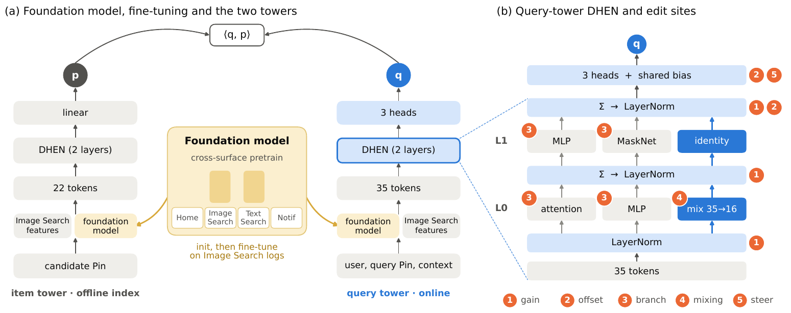
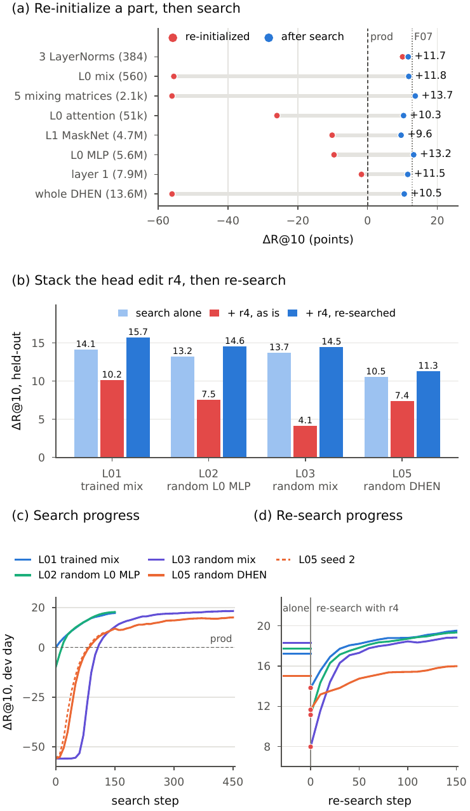
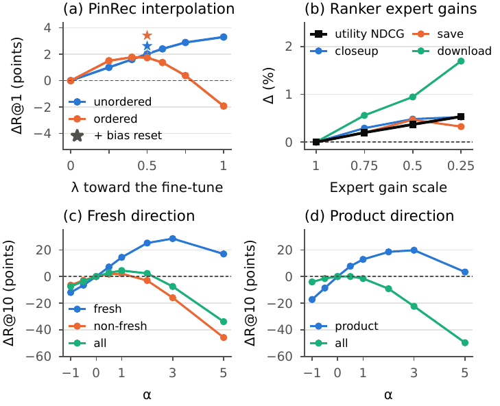

训完的控制量，还可以直接改
推荐模型上线之后，业务目标、库存和约束还会变。通常的做法是改数据、调 loss 或动结构，再跑一轮微调。Pinterest 这篇论文试了另一条路：已经训好的权重，能不能像代码一样拿来检查、改写、组合，再直接跟着评估反馈迭代。
他们把这套做法叫做 weight coding。主案例是线上跑着的 Image Search 双塔召回，共 147M 参数。Query tower 用两层 DHEN 处理用户、query Pin 和上下文，再跟 item tower 做余弦检索。
训练跑完时，DHEN 里 L0 和 L1 的 LayerNorm gain 都落到了初始值以下。把 L0 的 gain 和 L1 的 offset 重置之后，生产评估器 上的 recall@10 涨了 10.10 个百分点。这个编辑编号 F04，只改了 128 个数。
LayerNorm 当然不是万能旋钮，但 F04 至少露出了一个口子：训完的权重里，还留着可以直接拧的控制量。同一套流程接着还能做定向搜索和组合，甚至把整个交互模块随机重置之后，重新搭出有效计算。
先扫描能改的位置，再按反馈改
Weight coding 里的分工很明确：工程师用自然语言给出目标和约束，LLM agent 去看模型结构和权重、提假设，进沙箱跑编辑。一轮循环里，先在开发日按模块组扫一遍编辑原语，换别的日期复测，丢掉正负号翻车的编辑，再做定向修改或搜索；最后还是工程师按验证协议挑候选、上实验、决定要不要上线。定目标和批上线，始终攥在人手里。
为了让「改完立刻评」跑得动，他们先用生产模型在生产评估器的数据上过一遍，把 embedding 和必需的中间结果缓存下来。后面的编辑直接改 GPU 内存里已加载的 TorchScript 参数，只重算受影响的模块及其下游。改哪块定好了、具体取值还没定时，交给 evolution strategy 按生产指标更新这些选定值，或者更新每一行的缩放；LLM agent 只管挑要搜的位置，不逐个手调数值。一轮双塔迭代在找到一小批候选前，墙钟时间不到 2 小时。这是离线迭代耗时，和线上 serving 延迟两码事，编辑后的产物完全不动 serving 逻辑。
验证口径拆得很死。扫描、编辑和搜索只碰开发日；过滤日只干一件事，把在开发日和过滤日上符号相反的单次编辑筛掉；Held-out days 从不参与迭代。评估器给正样本算排名时，统计的是分数严格高于该正样本的候选个数。但一条把物品 embedding 塌缩掉的诊断编辑，硬是把 recall@10 从 0.626 抬到了 0.639，于是他们补上了悲观的并列处理，同分候选一律排在正样本前面。后文报告的召回数字，全按这套生产评估设置出。
全量扫描在 130 个模块组上跑了 1,258 次编辑。47% 的改动对 recall@10 影响不到 0.1 个点，涨超 1 个点的只有 10%，说明乱改基本没戏，真正管用的位点集中在 DHEN 的归一化、分支、token mixing 和输出头。
哪怕在开发日绝对变化超过 1 个点、后面又复测的编辑里，也有 23% 会在另一天变号。继续开发或组合之前，得先把这类不稳定的效应滤掉。

来源：论文 Figure 2。左图是两塔都从跨场景基础模型出发、再在 Image Search 日志上微调；右图是 query tower 的两层 DHEN，以及本文用到的编辑位点：gain、offset、分支、mixing 和 steer。
拉大 LayerNorm gain、压低 L1 的共享 offset，recall 都会涨。按作者的解释，这相当于相对后续分支和共享 offset，加强了 shortcut 送过去的 token；而共享 offset 可能把 query embedding 往共同方向拉，让检索扎堆落到少数 hub Pins 上。同理，压低分支贡献、放大 L0 shortcut 的贡献，recall 也会涨。干脆把全部四个分支砍掉，只留线性 token mixing 和 LayerNorm，在所有 held-out days 上还能涨 6.1 个点，而且天天高于生产模型。单看这个指标，训出来的分支净贡献反而是负的。
头编辑 r4 改的是另一类共享量。它把检索头的 bias 推离非 fresh Pins 均值 embedding、朝 fresh 方向挪，加一个常数偏移，再混入另一训练好输出头 20% 的权重。只调这四个标量，生产评估器上就带来 8.83 个点。实际改了 65.6k 个参数，全程没做搜索。
单独有效的编辑，叠上还要再搜一遍
除了这些离散改动，训完的 token mixing 权重往往扎堆在少数输入上。他们从训练权重出发，对五个 DHEN mixing 矩阵共 2,064 个值搜了 150 步，得到编辑 L01，生产评估器上的增益是 13.69 个点。
矩阵的相对范数动了 39% 到 64%，根均方却只在 −6% 到 +16% 之间，说明搜索干的主要是在 token 之间重新切分贡献，没把表示推倒重学。L0 shortcut 里最直观：小份额的 token 权重抬上来了，原本占主导的降了下去，归一化熵从 0.94 升到 0.97。
单看都涨的编辑，直接叠一块未必更好。把 r4 硬加到 L01 上，四日增益反而从 14.1 个点掉到 10.2 个点。作者给出一种可能的解释：两者可能都在修共享 offset 以及 shortcut 的相对强度，叠在一起撞车了。于是他们先把 r4 放上去，再按同样设置重搜 mixing 矩阵和检索头 bias，做出 L07。L07 一共动了 67.7k 个数，真正搜的是 2,128 个值；生产评估器上增益 15.00 个点，跨 held-out 日期 15.7 个点，最差一天也有 13.8 个点。摘要里把这项最佳结果另记作相对生产模型 +24%。
算力账也摆出来了：跨场景基础模型训练超过 200 GPU hours，单场景 post-training 微调跑在 8 张 A100 上大约 140 GPU hours。一次完整的 weight-coding 循环平均 8.6 GPU hours，找到这篇论文的最佳模型跑了 4 个循环，所以算力约占这次微调的 24.6%。这些都是 GPU 时间，和前面不到 2 小时的墙钟时间不是同一口径。
跨轮次加起来，agent 一共评估了超过 2,000 个编辑配置，以及大约 190,000 个搜索候选。

来源：论文 Figure 1。左图对照常规训练和 weight coding：前者靠梯度间接改许多权重，后者直接改选定的张量。右图是连续迭代后、相对生产模型的指标变化；在组合阶段，图中标出 recall@10 相对 +24%，macro R@10 为 +31%，top-10 中不同 Pins 为 +16%，recall@100 为 +10%。正文没有定义 macro 的分组方式，这里按图中标注转述。
| 编辑 | 改动数 | 搜索数 | 生产评估器 ΔR@10 |
|---|---|---|---|
| r4 | 65.6k | 0 | +8.83 |
| F04 | 128 | 0 | +10.10 |
| L01 | 2,064 | 2,064 | +13.69 |
| L07 | 67.7k | 2,128 | +15.00 |
| L05 | 13.6M | 2,448 | +9.80 |
来源：论文 Table 2。L07 是在 r4 就位后重搜 L01 得到的最佳双塔编辑；L05 是把整个 DHEN 随机重置后再搜混合与归一化。增益是相对同一评估配置下生产模型的绝对百分点。
随机重置之后，只搜混合和归一化
接着他们追问了一步：这些收益到底靠不靠训好的权重打底？做法很直接，拿默认的 PyTorch 初始化把某个模块重新随机化，周围已训练的部分原封不动。有的模块一重置，开发日 recall 几乎砸到 0；有的掉得少得多。
能不能拉回来，全看搜哪块。给随机重置的整个 DHEN 只做行缩放，结果仍比生产模型低 10.0 个点，行缩放动不了 token 怎么混合。L05 换了搜法：把全部 13.6M 个 DHEN 参数重置掉，只搜 mixing 矩阵和 LayerNorm，一共 2,448 个值。它在生产评估器上高出生产模型 9.80 个点，跨 held-out 日期高出 10.5 个点。重建后的交互模块里，绝大部分参数其实还是随机的，只是编码器、输出头和 item tower 仍留着训好的权重。 Hoot 说
正文已经说明：随机重置整个 DHEN 之后，只按行缩放仍比生产模型低 10.0 个点。这里用一行三个 token 的示意权重，看行缩放为什么改不了它们的混合方式。份额按绝对权重占总和的比例计算，与论文对 L0 shortcut 的定义一致。下面的数字都是示意。
一行三个混合权重 → 份额是绝对值占比 → 整行同乘一个系数 → 份额不变 → 只有改各个权重才能重分配混合
- 三个示意权重 → 各自的混合份额示意中，随机初始化后一行的混合权重是 2、2、6，总和为 10。三个 token 的份额因此是 20%、20% 和 60%，由 C 主导。2+2+6=10；份额 = 2/10、2/10、6/10
- 整行乘上 1.5 → 权重变了，份额不变行缩放把三个权重同乘 1.5，变成 3、3、9，总和为 15。各自占比仍是 20%、20% 和 60%，相对混合没有变。2×1.5=3，6×1.5=9；3/15 与 2/10 同为 0.2
- 逐个改混合权重 → 份额被重新分配若把同一行搜成 5、3、2，总和仍是 10，份额变成 50%、30% 和 20%。A 和 B 的贡献上升，这是行缩放做不到的。5+3+2=10；份额 = 5/10、3/10、2/10
所以随机重置之后，只调行缩放恢复不了有用的混合；L05 搜索的是 mixing 矩阵和 LayerNorm，而不是只做行缩放。

出处
论文 §4.4.2：只搜索整个随机 DHEN 的 row scales，仍比生产模型低 10.0 个点，因为行缩放不能改变 token 如何混合。L0 shortcut 里，一个 token 的份额是它占总绝对混合权重的比例。图中 2、2、6、1.5、5、3 及对应份额均为示意。不管是从随机起点搜 mixing，还是重置整个 DHEN 后开搜，起步都很长一段贴着零 recall 走，大概要 90 到 110 步才越过生产模型。换两个随机种子跑全 DHEN 搜索，曲线轨迹相近。搜出来的 mixing 矩阵和原训练矩阵相关只有 0.13 到 0.46，但它们带来的 token 份额变化，跟从训练权重出发搜出来的变化相关达到 0.76。矩阵本身长什么样没那么死板，只要份额重分配到位，就能给出有用的混合。

来源：论文 Figure 4。(a) 红点是重置后在开发日的 recall，蓝点是搜索后在 held-out days 上的结果；(b) 把 r4 直接叠上去，和叠上后再搜索的对比；(c) 从训练或随机起点出发的搜索轨迹；(d) 加上 r4 之后的重搜轨迹。
换模型、换目标，以及线上结果
同一套流程能搬到漏斗里的其他生产模型，具体编辑却往往得换套路。PinRec 是线上跑着的 106M 生成式召回，用自回归 transformer 和共享的 Pin embedder。这里的 unordered recall@k 只要任一 query embedding 把目标排进 top-k 就算命中，ordered recall 则要求匹配在对应的自回归步上。重置 Pin embedder 的 LayerNorm gain，开发日 unordered recall@10 直接掉 8.8 个点。真有效的是把输出 bias 置零，以及向一个用于广告的 Image Search 微调快照做半程插值；这两项各自在每个 held-out day 的每项指标上都有提升。插值曲线还露出一个边界：越靠近微调端，unordered recall@1 一直往上走，ordered recall@1 却在到头前就见顶，最后掉到生产模型下面。把半程插值和重置输出头隐层 bias 合在一起，held-out unordered recall@1 涨 2.31 个百分点，ordered recall@1 涨 2.64 个百分点。
测过最大的模型是 1.37B 的精排，用 8 个专家和 15 个互动头的 multi-gate MoE。把专家的 LayerNorm gain 重置为 1，closeup AUC 绝对值会掉 0.029。反过来把这些 gain 缩下去，等于削弱专家、相对抬高 direct path，排序反而变好。
半倍缩放和四分之一缩放，在每个 held-out day 都拉高了 utility NDCG，表 3 给出的汇总是 +0.53%，对应 z 分数在 7.8 到 10.5 之间。closeup、save、download 和 share 的 hit@3 也都上升（hit@3 按用户计，指每请求前三个候选里被互动的 Pins 数）。可见哪些编辑管用强绑定模型本身，双塔上那套改法没法照搬给 PinRec 和精排。
Steering 提供了另一类控制手段。方向 u 用带该属性和不带该属性的物品 embedding 均值做差得到，直接写进检索头的 bias：w ← w + αu，省得每次推理再去动 embedding。顺着 freshness 或商品属性方向，一个系数 α 就能调节这类内容在 top-10 里的曝光。α=1 时，freshness steering 让 overall recall@10 涨 4.5 个点，fresh recall 涨 14.4 个点，fresh 曝光从 5.2% 升到 13.4%。Product steering 让 product recall 涨 12.8 个点，overall 掉 1.5 个点，说明是在拿整体召回换商品召回；product 曝光则从 0.26% 拉到 1.06%。
测试范围内，曝光随 α 单调变化：fresh 份额从 α=−1 时的 2% 一路推到 α=5 时的 70%；product 份额在 α=5 达到 39%。但 product steering 拧太狠会让结果扎堆，因为最热门 1% Pins 的份额从 0.10 升到 0.42，这基本划出了这一方向的可用边界。把 α=1 的 product 方向叠到 L07 上，product recall 增益从 28.3 个点提到 38.2 个点，此时 overall 增益是 14.1 个点。

来源：论文 Figure 5。(a) PinRec 从生产模型插值到微调快照，unordered 与 ordered recall@1 的走势并不相同；(b) 缩小精排专家的 gain 后，utility NDCG 与各类 hit@3 的相对变化；(c)(d) 双塔在 fresh 方向和 product 方向上的 recall@10。
线上 A/B 在真实生产流量上测了双塔编辑。每组看大约 1000 万用户、约一周数据，指标按该召回源、相对生产模型、人均口径算。Fresh Pins 定义为最多 28 天。
一组实验冲的是全部互动类型的 recall。受数据分布影响，这批模型更偏向 closeup。六条实验组都拉高了每次曝光的 closeups，而且这个比率和生产评估器 recall@10 增益的 Pearson 相关为 0.97。long clicks 和 product share 跟着涨，但 saves 可能下降。
另一组换了评估目标。他们改用生产流量里的正样本，配上超过 5000 万 Pins 的 serving index，还是搜 L07 那 2,128 个值，目标改成 save 类标签的 recall，同时对 clicks、long clicks 和 products 加 hinge 惩罚。三次不同起点和语料权重的搜索得到 A2、B2 和 C2。被编辑召回源的人均 saves 涨了 8.4% 到 10.7%，每次曝光的 saves 涨 4.3% 到 5.3%；closeups 也涨，long clicks 和 product share 往下走。A2 的人均 closeups 涨 7.6%，saves 涨 10.7%。所以还是同一批可编辑位点，换掉目标、正样本和语料，就能往不同业务指标上拧。
| 实验组 | 目标 | 人均 closeups | 人均 saves |
|---|---|---|---|
| L07 | 全部互动，侧重 closeup | +6.7% | −0.3% |
| A2 | save，并限制 clicks 与商品 | +7.6% | +10.7% |
| B2 | 同上 | +4.8% | +8.4% |
| C2 | 同上 | +6.6% | +9.6% |
来源：论文 Table 4，摘录 closeups 与 saves。全部互动目标下还有 r4、r6、F04、L01、L06 等组，closeups 都上升，saves 则有升有降。
作者也写了召回源之间的抢量：精排倾向于把编辑模型给出的 Pins 排得更高，压低了其他召回源的曝光份额和互动。他们认为，预排序和精排不必担心这种 cannibalization；至于 weight-coded 预排序模型的线上实验，论文只定性提了有全站收益，没给具体数字。
离线验证上，多数测试变体在所有 held-out days 上改进了全部十种互动类型，fresh 和 non-fresh 也是天天提。搜出来的编辑从开发日切到 held-out，recall@10 增益平均回落 4.5 个点，不过在 held-out 上仍为正。独立语料上，L07 还有 9.7 个点；全量语料，以及全程没优化过的 recall@1000，增益都还在。top-10 中不同 Pins 增加 9% 到 18%，最热门 1% 的份额下降。这些结果支持在测试设定内泛化，但论文也明写：它不能排除自适应过拟合，或跨日期共享的偏差。
训完的模型为什么还留着这么多可改空间？作者的猜想是，单一训练日程可能让归一化 gain、共享 offset 和分支强度对目标任务搭配得不好。一个辅助观察是，重置 L0 gain 之后，最后训练日检索头的 in-batch sampled-softmax loss 从 1.300 降到了 1.015。但单靠「gain 偏小」解释不了全貌。把一维参数的 weight decay 去掉重训，LayerNorm gain 确实会接近 1，生产评估器上的 recall@10 反而跌了 3.5 个点；在这个重训模型上再跑 mixing 搜索，还能加上 16.8 个点，而在生产模型上是 14.1 个点。
这么看下来，weight coding 没法靠一次把旋钮拨到位就完事，它更像一条得反复跑的开发路径。真要进日常生产，还得摸清哪些模块能用很少的参数有效控制，以及模型或数据分布变了之后，老编辑还能不能站得住。复用前得再验证一遍，并且把编辑和起始 checkpoint、代码、评估数据、目标绑在一起管。这篇工作里，线上反馈能帮上忙，但还没自动接进循环；真到上线和业务取舍，仍由工程师和专家来定。
读完这篇，你觉得
夜读鸮记下了，谢谢你的反馈。
点一下即可，无需登录；再点一次撤回。只统计匿名次数，不记录你是谁。
讨论
欢迎补充实验细节、复现经验或不同看法。需 GitHub 登录。
正在加载讨论…